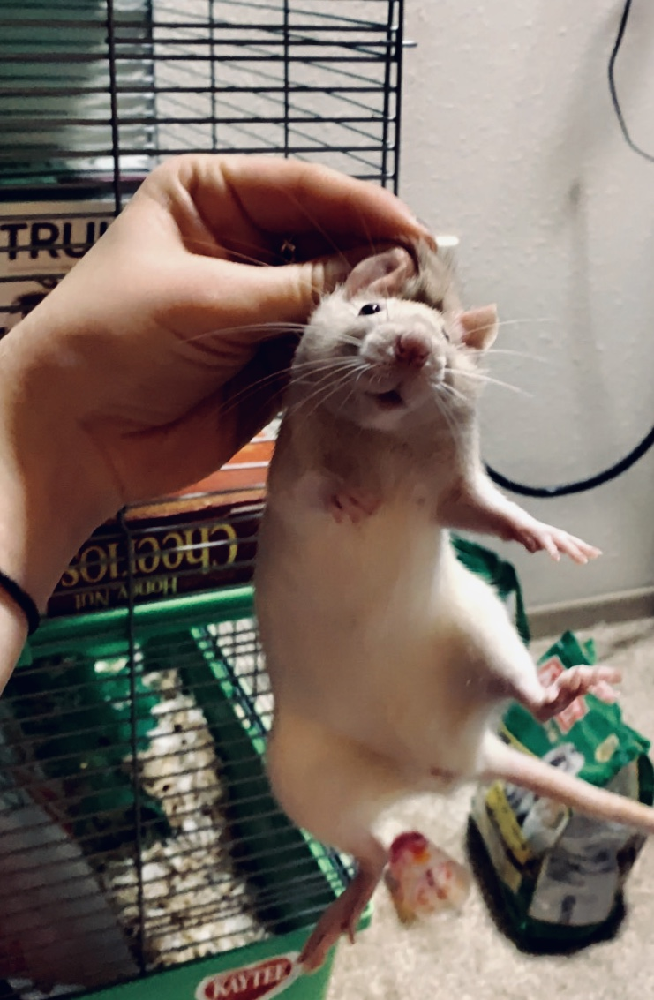

She finally managed to convince my dad that she'd be able to care for them. We immediately scheduled a rat playdate to introduce them.
Luna, the albino rat, is a bit skittish and antisocial. Sometimes she won't even come out for playtime. Despite this, she is super adventurous and is not to be trusted anywhere near small spaces she could escape into. I'm also pretty sure she'e the one who chewed the hole in the travel cage before they all escaped for a couple hours.
Soleil is the poster child of pet rats. Her hooded markings are particularly attractive. She used to be extremely anxious, but has warmed up since moving in with my rats.

At the end of this summer, Ella asked if I wanted her rats since she felt she wasn't taking good enough care of them. I figured it could be fun to double my little rat pack, so I loaded up all four rats and drove off for Oregon. Unfortunately for me, twice and many rats make twice as much poop. But they're a lot of fun and judging by the way they cuddle when they sleep, they're enjoying each other's company.
Frida was immediately buddies with adventurous Luna, and Artemis hung out in the corner with mellow Soleil. I find it so interesting to watch their little personalitites interact and evolve.